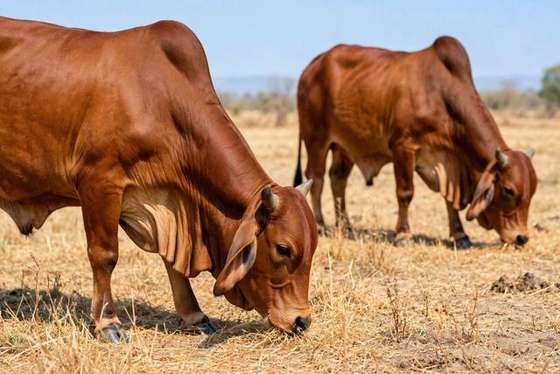
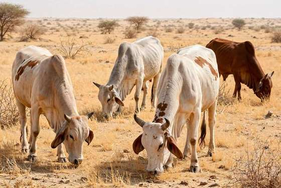
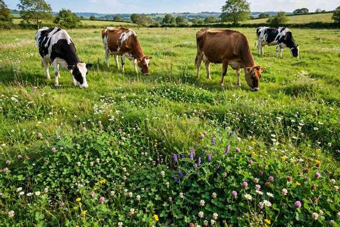
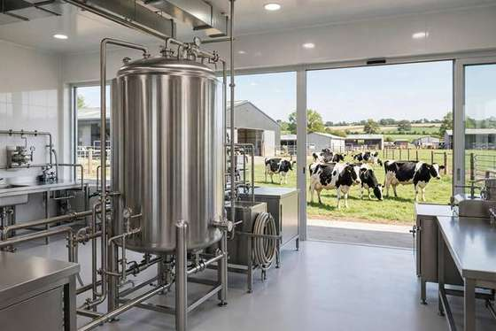
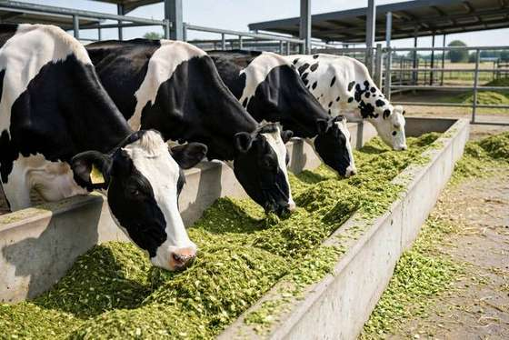
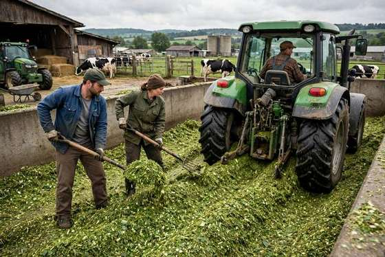
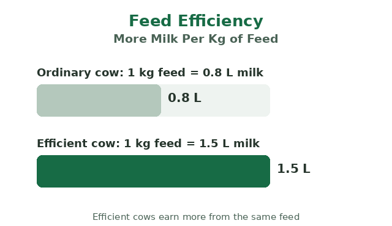

Theriogenology · Climate Resilience, Efficiency & the Future of Farming
The world needs more milk and meat every year — but from fewer resources and in a warming climate. Sustainable livestock breeding answers this challenge: select animals that produce more per animal, eat less feed per litre of milk, resist disease, tolerate heat, and breed back quickly. Such animals earn more for the farmer and cost less to the planet.
This guide explains climate-resilient breeds, high production per animal, feed efficiency, disease-resistant genetic lines, and the five International Breeding Priorities that now guide livestock development worldwide.
Climate-Resilient Animal Breeds

Sahiwal cattle — heat tolerance built into the breed

Indigenous Cholistani cattle — centuries of desert adaptation
Heat stress is now one of the biggest threats to dairy farming. When temperatures rise, sensitive cows eat less, milk less, conceive poorly and fall sick more often. Climate-resilient breeds carry the genetics to cope: loose skin and efficient sweating, a lower metabolic heat load, tick resistance and the ability to thrive on coarse local fodder.
1
Sahiwal — the heat-tolerant dairy breed(Pakistan's premier dairy zebu: keeps milking in extreme heat, resists ticks and tropical disease, and thrives on local fodder)
2
Indigenous breeds as genetic treasures(Cholistani, Red Sindhi, Tharparkar and local buffalo carry centuries of adaptation to heat, drought and disease — conserve and improve them)
3
Smart crossbreeding(Crossing heat-tolerant zebu with high-yielding Holstein Friesian combines tolerance with production — the classic strategy for tropical dairying)
4
Select for heat tolerance directly(Genomic tools now identify animals that hold milk yield and fertility in hot weather — select sires with proven heat-tolerance values)

Diverse pasture — legumes and grasses feed the herd and the soil
High Milk & Meat Production per Animal
The most sustainable animal is a productive one. One cow giving 25 litres a day produces the milk of three cows giving 8 litres — with far less total feed, water, land and waste. Breeding for higher yield per animal is therefore both an economic and an environmental goal.
More milk per cow: select sires with high, reliable milk breeding values and keep daughters of the best cows.
More meat per animal: faster growth and better carcass traits mean fewer animals raised for the same meat output.
Longer productive life: a cow that milks for 6 lactations instead of 3 spreads her rearing cost over twice as much milk.
Balance matters: extreme yield without fertility and health is not sustainable — select for total merit, not milk alone.

High production per cow — the milk tank fills faster, the profit grows
Feed-Efficient Livestock

More milk per kilogram of feed — the profit is in efficiency

Good silage — quality feed lets efficient genetics perform
Feed is 60 to 70 percent of dairy farming costs. Feed efficiency — how much milk or meat an animal produces per kilogram of feed — is therefore the single biggest lever on farm profit. Efficient animals convert more feed into milk and less into waste heat and methane.
Residual feed intake: the modern measure — efficient animals eat less than expected for their size and production, and the trait is heritable.
Select efficient sires: breeding values for feed efficiency are now published for leading dairy bulls.
Feed quality counts too: good silage, balanced rations and clean water let efficient genetics express themselves.
Lower methane: efficient animals produce less methane per litre of milk — better for the farm's future and the climate.

Feed efficiency — nearly twice the milk from the same feed
Disease-Resistant Genetic Lines
Healthy animals need fewer medicines, live longer and produce more. Resistance to mastitis, tick-borne disease, internal parasites and metabolic disorders is partly inherited, so it can be improved by selection.
Mastitis resistance: select for low somatic cell count and strong udder conformation.
Tick and parasite resistance: zebu breeds carry strong natural resistance — use it in crossbreeding programmes.
Metabolic health: select against ketosis and milk fever susceptibility through sire health indexes.
Longevity: daughters that stay healthy stay in the herd — longevity is itself a heritable trait worth selecting for.
Remember: breeding for health never replaces vaccination, hygiene and good management — it multiplies their effect. A resistant animal in a dirty shed still falls sick.
The 5 International Breeding Priorities
Breeding organisations worldwide now agree on five priorities for the livestock of the future. Every mating decision on a modern farm should serve at least one of them.
1
High productivity(More milk and meat per animal — fewer animals needed for the same output)
2
Climate adaptability(Animals that tolerate heat and changing environmental conditions)
3
Reproductive efficiency(Better conception rates and shorter calving intervals — a calf every year)
4
Disease resistance(Genetically healthier livestock that need fewer medicines)
5
Feed efficiency(Higher production with lower feeding costs)
Sustainable & Profitable Livestock Production
Sustainability and profit are not opposites — on a well-run farm they are the same thing. Efficient, healthy, fertile animals cost less to keep and earn more every year.
Clean water and shade — healthy cows, lower stress
Rotational grazing: rested pasture regrows stronger, feeds more animals and protects the soil.
Manure as a resource: composted manure returns nutrients to fodder fields and reduces fertiliser cost.
Clean energy: solar power for milking, cooling and water pumping cuts electricity bills on sunny farms.
Record keeping: milk, feed, health and breeding records turn guessing into management.
Plan the herd: breed the best, cull the poorest, and keep the herd size the farm can feed well.
⚠ Important Tips:
Start with the basics — feeding, health and records — before investing in advanced technology.
Improve one trait at a time through sire selection; chasing everything at once achieves nothing.
Protect local breeds — their heat and disease tolerance is irreplaceable genetic wealth.
Ask your veterinarian about genomic testing and proven semen for your herd's goals.
Frequently Asked Questions
What is sustainable livestock breeding?
Sustainable livestock breeding selects animals that produce more milk and meat with less feed, water and medicine, while staying healthy and fertile in changing climates. It balances productivity, animal welfare, farm profit and the environment so that farming remains viable for future generations.
Why are climate-resilient breeds important?
As temperatures rise, heat stress reduces milk yield, fertility and growth in sensitive breeds. Climate-resilient breeds such as Sahiwal tolerate heat, humidity and ticks, keep producing in hot conditions and need less cooling and treatment — making them the foundation of future dairy farming in warm regions.
What is feed efficiency in dairy cattle?
Feed efficiency measures how much milk or meat an animal produces per kilogram of feed eaten. Efficient cows convert more of their feed into milk and less into waste, so feed costs fall and profit rises. Feed efficiency is partly inherited, so it can be improved by selecting efficient sires.
How does breeding improve disease resistance?
Resistance to diseases such as mastitis, tick-borne infections and internal parasites is partly genetic. Selecting animals with low somatic cell counts, strong immunity and proven health records produces herds that need fewer medicines, suffer fewer losses and live longer productive lives.
What are the international breeding priorities?
The five international breeding priorities are: high productivity (more milk and meat per animal), climate adaptability (animals tolerating heat and changing conditions), reproductive efficiency (better conception rates and shorter calving intervals), disease resistance (genetically healthier livestock), and feed efficiency (higher production with lower feeding costs).
Can sustainable breeding also make more profit?
Yes — sustainability and profit go together. Efficient animals eat less feed per litre of milk, healthy animals cost less in medicine, and fertile animals give a calf every year. Lower costs and steady production mean more income, not less.
Is the Sahiwal breed good for hot climates?
Yes. The Sahiwal is one of the best heat-tolerant dairy breeds in the world. It keeps milking in high temperatures, resists ticks and tropical diseases well, and thrives on local fodder. Crossbreeding Sahiwal with high-yielding breeds combines heat tolerance with higher milk production.
پائیدار مویشی پالن سے کیا مراد ہے اور یہ کیوں ضروری ہے؟
پائیدار مویشی پالن کا مطلب ہے ایسے جانور پالنا جو کم خوراک اور کم دوائی سے زیادہ دودھ اور گوشت دیں، گرمی برداشت کریں اور بیمار کم ہوں۔ اس سے کسان کا خرچ کم ہوتا ہے، آمدنی بڑھتی ہے اور آنے والی نسلوں کے لیے بھی فارمنگ ممکن رہتی ہے۔
Key Takeaway
The livestock of the future will be productive, efficient, healthy, fertile and climate-tough — and they will be bred, not found by chance. Every farmer, from a two-cow household to a thousand-cow dairy, can move in that direction: choose proven sires, keep records, protect local breeds and select for the five international priorities.
Our mission: To promote modern animal reproduction, improve livestock genetics, develop productive and climate-resilient breeds, and contribute to sustainable livestock farming worldwide.